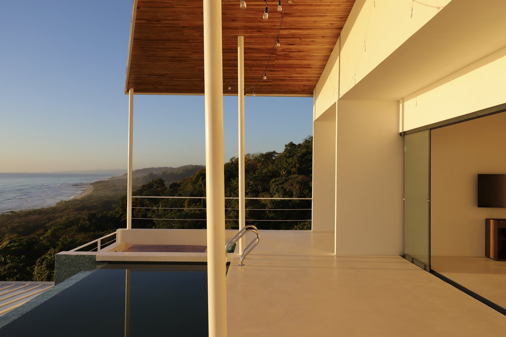
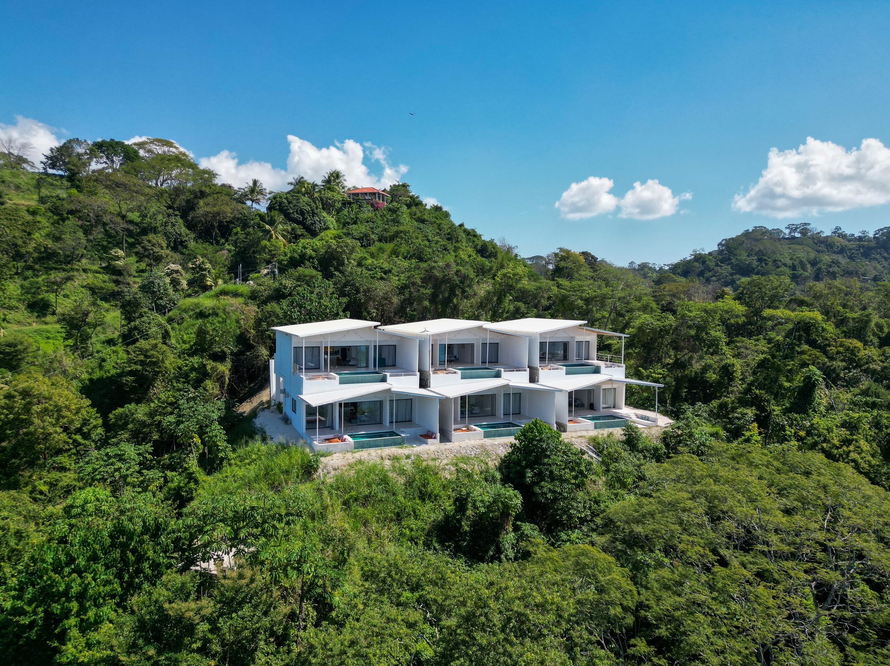
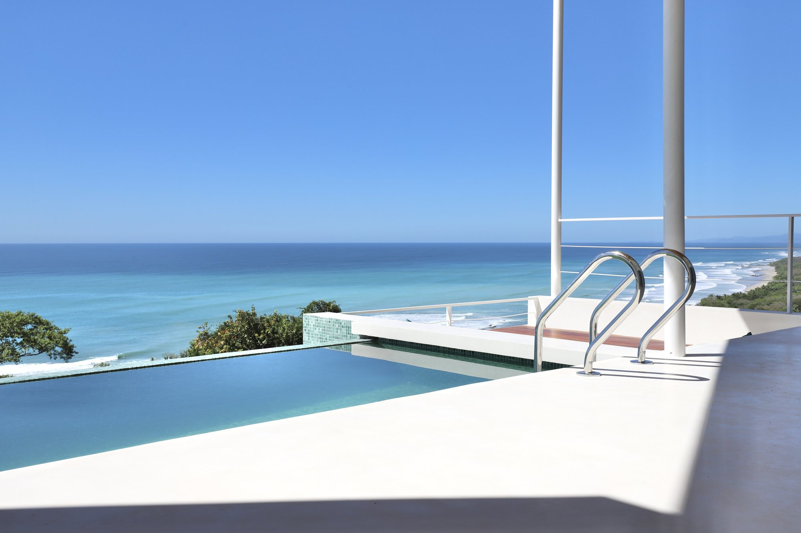

The luxury villa market in Santa Teresa has evolved dramatically over the past decade. What once meant a simple beachfront house with a patio now encompasses an entirely different category of experience: private retreats designed for total seclusion, with architecture that dissolves the boundary between interior and jungle, and amenities that rival five-star hotels—minus the crowds.
Why Santa Teresa for a Villa Stay
Santa Teresa's remote location is precisely what makes it ideal for villa living. Unlike popular beach towns that can feel congested and touristy, Santa Teresa maintains genuine privacy. You're staying on hillsides surrounded by jungle, with ocean views rather than ocean-adjacent crowds. The nearest neighbor might be a kilometer away. This isolation isn't loneliness—it's intentional seclusion.

The infrastructure has matured. Roads, though still unpaved in places, are passable. Electricity is reliable. WiFi is now standard (essential for many travelers). And the amenities—private chefs, spa services, concierge support—have materialized to serve this growing market.
What Defines a Truly Exceptional Villa
Indoor-Outdoor Design
The best villas in Santa Teresa don't distinguish between inside and outside. Floor-to-ceiling glass walls open entirely to terraces and gardens. Bedrooms flow directly to private outdoor spaces. Kitchens merge with dining areas that extend into pavilions. The jungle becomes part of your living space. This requires careful architectural thinking: proper shade, smart ventilation, and strategic use of materials to keep the space comfortable year-round while maintaining this transparency.
Private Infinity Pools
Nearly every villa of consequence includes an infinity pool—and the design matters enormously. The best versions appear to spill into the landscape itself, with views that extend to the ocean or lost into jungle canopy. A mediocre pool feels like a resort feature. An exceptional one feels like a private oasis.
Views That Justify the Location
Santa Teresa villas command premium prices, and they should deliver extraordinary views. Look for villas with unobstructed Pacific views, jungle vistas from multiple angles, and sunset sightlines. The view is 40% of your villa experience—don't compromise on it.
Thoughtful Concierge & Services
The villa becomes secondary to the experience. Exceptional properties offer personalized concierge (restaurant reservations, activity arrangements, local introductions), daily housekeeping, optional private chef services, and spa treatments available on-site or nearby. These aren't luxuries—they're what enable a proper stay when you're intentionally isolated.
The Les Roches Approach
Les Roches represents a particular philosophy: six individual villas, each completely private, designed as intentional retreats rather than rental properties. Every villa features a private infinity pool, full indoors-outdoor living, and positioning on hillsides to maximize jungle and Pacific vistas. Each is a five-minute walk from the beach—close enough for convenience, far enough to maintain complete privacy.

The design language is distinctly minimalist. No unnecessary ornamentation, no resort aesthetics. Clean architectural lines, natural materials, and intelligent landscaping. This restraint allows the landscape itself—jungle, ocean, sky—to become the decoration.
What Sets Them Apart
Individual villas mean you're not sharing walls, parking, or outdoor spaces with other guests. No elevator sounds. No hallway noise. No wondering if the person next to you is enjoying the experience. At Les Roches, you're genuinely alone—within a 5-minute walk of the beach, but psychologically distant from any resort environment.
Daily housekeeping, personalized concierge, and optional spa or chef services transform the villa from accommodation into a proper residence. You're not "staying in a rental"—you're inhabiting a private home.
What to Pack & How to Prepare
Clothing
Light, moisture-wicking fabrics are essential—humidity is constant. Bring a light rain jacket for green season. Comfortable walking shoes for jungle trails and beach exploration. Swimwear (obviously), plus cover-ups or light pants for sun protection. The dress code is resort-casual; Santa Teresa doesn't encourage formal evenings.
Sunscreen & Wellness
The tropical sun is intense. Bring high-SPF sunscreen and plan to reapply constantly. Insect repellent with DEET is essential, especially during green season. Medications you use regularly—refills are limited and pharmacies stock limited variety. Consider bringing electrolyte supplements; the heat can be dehydrating.
Electronics
Bring phone chargers and adapters (Costa Rica uses US-style outlets). Headlamps or flashlights are useful for evening walks. Good noise-canceling headphones if you value music or podcasts.
Mindset
This is the most important item. A villa stay in Santa Teresa is designed for complete disconnection. Email can wait. Work can wait. Bring a novel, yoga mat, or journal. Plan time for absolutely nothing. The best villa guests arrive with the explicit intention to slow down.
Your Private Sanctuary Awaits
Six individual villas. Infinity pools overlooking jungle and Pacific. Personal concierge. Absolute privacy. This is what a true luxury villa retreat feels like.
RESERVE LES ROCHES →Final Thoughts
Luxury villa rentals in Santa Teresa are no longer novelty—they're a genuine alternative to traditional hotels and resorts. The best ones, like Les Roches, understand that true luxury isn't maximized luxury—it's maximized privacy, thoughtful design, and the freedom to live at your own pace in one of Costa Rica's most beautiful regions. If that appeals to you, a villa in Santa Teresa might be exactly what you're looking for.
